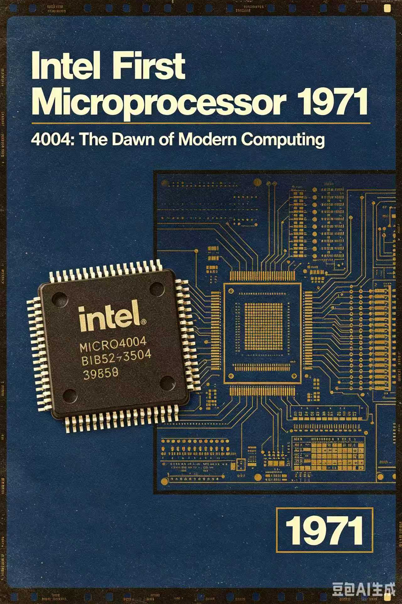
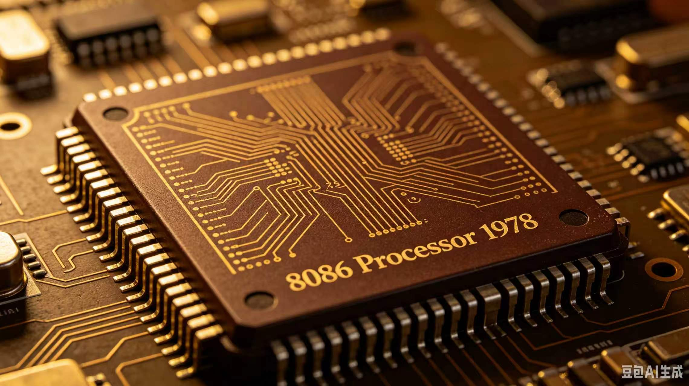
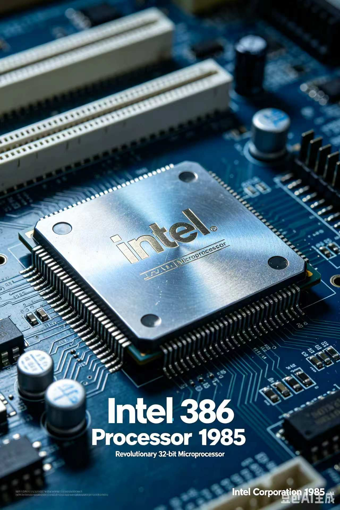
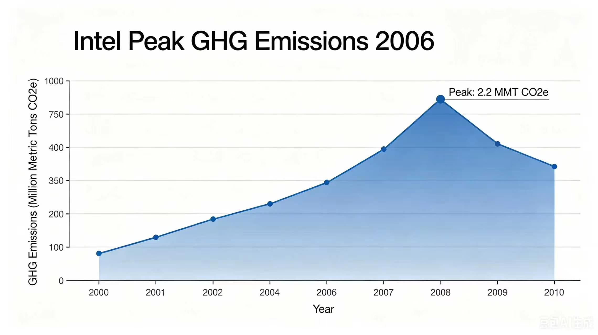
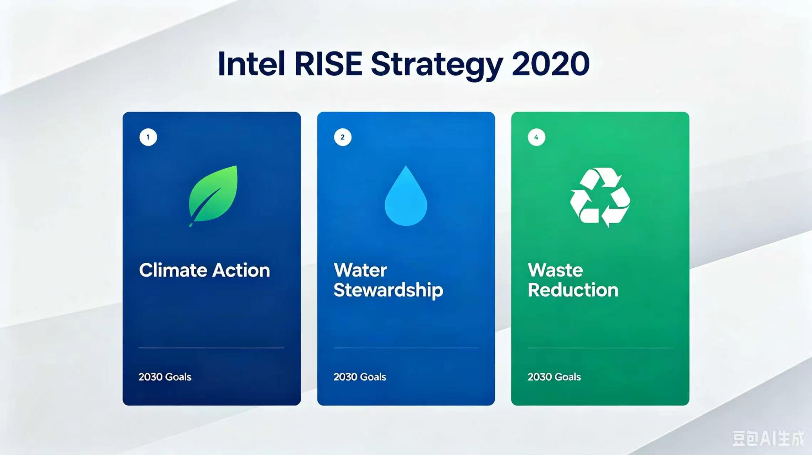
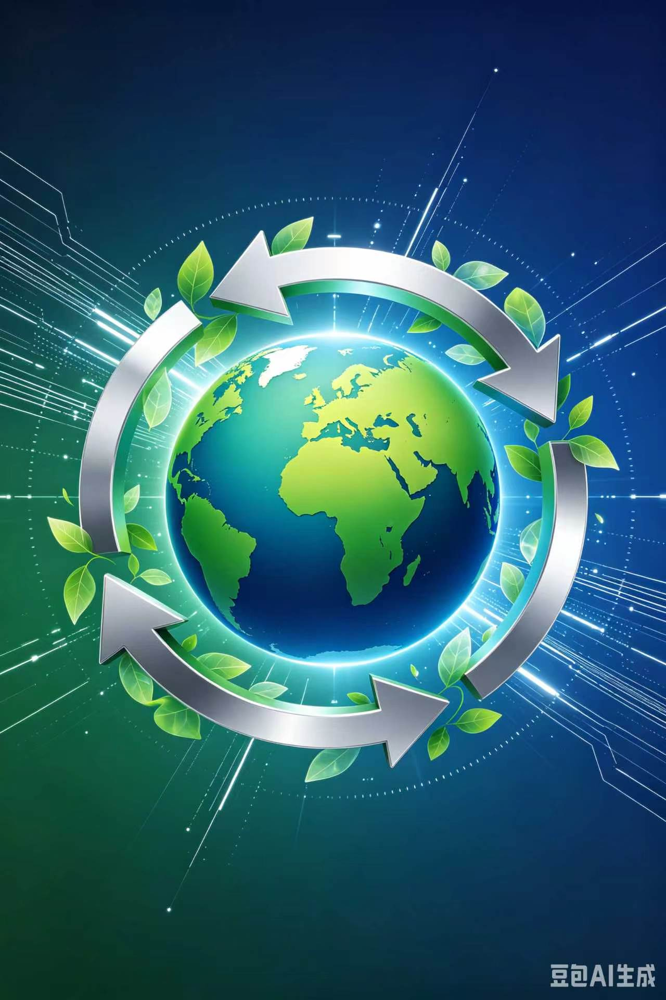
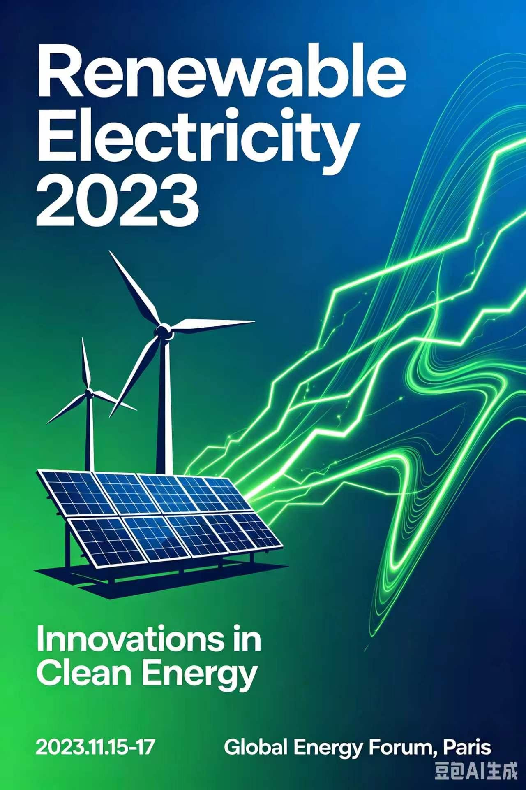
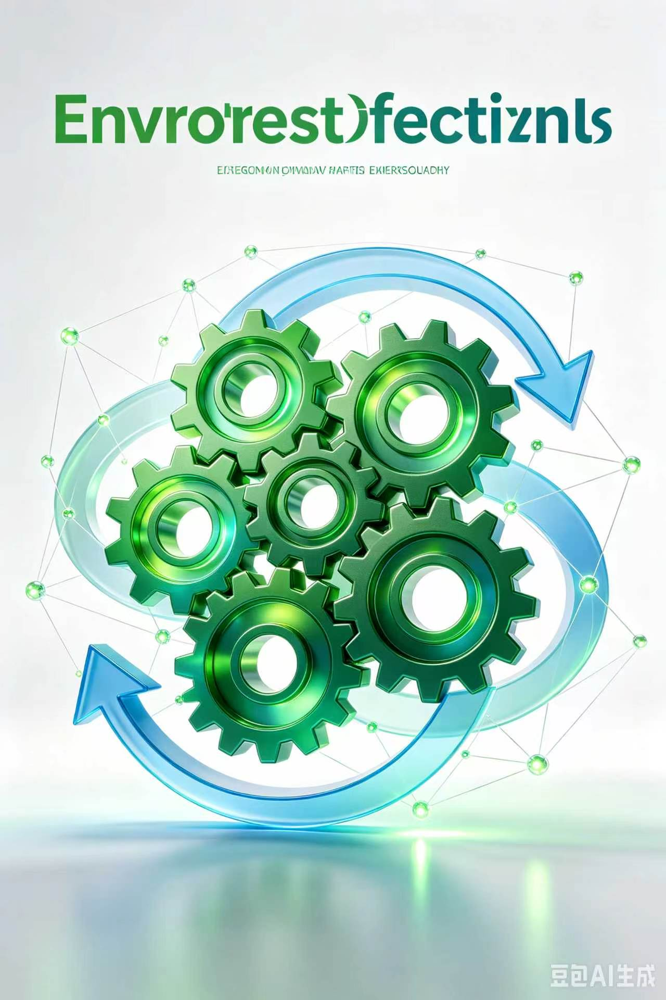

Intel Founded
1968
Robert Noyce and Gordon Moore renamed NM Electronics to Intel Corporation and laid the groundwork for decades of innovation.
Intel timeline
Explore how Intel's milestones shaped computing, sustainability, and responsible innovation across the decades.
Hover or focus each card to reveal the year and insight.
1968
Robert Noyce and Gordon Moore renamed NM Electronics to Intel Corporation and laid the groundwork for decades of innovation.

1971
Intel unveiled the 4004, the world's first commercial microprocessor, a turning point in the rise of modern computing.

1978
The 8086 established the x86 architecture that became the backbone of personal computers and data centers worldwide.

1985
The 386 introduced 32-bit architecture, enabling stronger performance, multitasking, and broader consumer adoption.

2006
Intel recorded its highest annual greenhouse gas emissions, prompting major investments in cleaner manufacturing and climate action.

2020
Intel launched its RISE strategy and 2030 goals to advance climate action, water stewardship, and waste reduction.

2022
Intel committed to achieving net-zero greenhouse gas emissions across its global operations by 2040.

2023
Intel reached 99% renewable electricity usage worldwide, sharply lowering its carbon footprint and accelerating progress toward long-term goals.

2024
Intel hosted its first Sustainability Summit to connect suppliers, policymakers, and industry leaders around next-generation manufacturing.